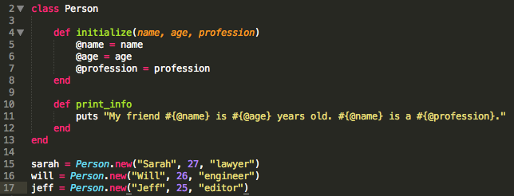

Week 6 Technical: Classes vs. Modules
August 23, 2014
As an object oriented programming language, Ruby has a few ways of giving your objects special attributes and abilities. First, there's the class. Each object is an instance of a class, so it inherits the built-in attributes and methods of that class, and that class's superclass (i.e. its parent class). One limitation to class inheritance in Ruby is that each class can have only one superclass, which makes it difficult to add more functionality to your objects. That's where modules come in. Modules can be "mixed in" to classes, giving the class even more methods to choose from. Think of a module like a bundle of methods and attributes that you can easily give to any class or object.
When to use a class
The main purpose of classes is to create instances of themselves. Create a class when you want to make at least one instance of that type of object. For example, you could create a Person class, and create multiple instances of that person class for each of your friends, like so:
Each of these new people inherits the properties and methods of the Person class, so that you don't have to create new methods for each of them.
When to use a module
Modules serve two main purposes. First, they allow you to share functionality between classes. If you "include" a module when creating a class, objects of that class will be able to use all the methods from the module(s) that are "mixed in." Second, they act as a way to label (or create a "namespace") for a group of methods or functionality that logically should be grouped together. One built-in module that you're probably familiar with is the Enumerable module, which you can use with Ruby's array or hash classes (or mix in to your own classes!). It makes sense for all the Enumerable methods to be grouped together into a module, since all of them share the characteristic of iterating over a data set. Here's an example of how to create an mix a module in to a class:

Though the example is a bit silly, it demonstrates how mixing a module into a class gives you access to the methods in that module!